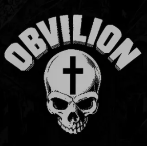

A OBVILION é um coletivo voltado para o estudo prático e teórico de tecnologia, arquitetura de redes, sistemas operacionais e cibersegurança[cite: 7].
Nossa filosofia baseia-se na formação técnica sólida, na investigação responsável de vulnerabilidades e no compartilhamento contínuo de conhecimento entre entusiastas e pesquisadores.
Obvilion é uma comunidade criada em torno de tecnologia, programação e cibersegurança, com foco em conhecimento, aprendizado e evolução[cite: 7].
Mais do que um nome ou uma logo, a Obvilion representa uma mentalidade: entender antes de agir, aprender antes de testar e proteger aquilo que importa[cite: 7].
Aqui, assuntos como redes, Linux, programação, segurança digital, OSINT, análise de vulnerabilidades e segurança defensiva fazem parte da nossa jornada diária[cite: 7].
A proposta é formar pessoas que não dependam apenas de ferramentas prontas, mas que busquem entender como os sistemas funcionam na sua essência, onde estão seus riscos e como podem ser protegidos[cite: 7].
Estamos à procura de mentes curiosas para fortalecer nossa comunidade. Não buscamos apenas especialistas, mas pessoas comprometidas com o aprendizado[cite: 7].
Áreas de interesse da comunidade[cite: 7]:
Requisitos: Experiência é bem-vinda, mas não obrigatória. O que realmente importa é interesse, responsabilidade e vontade constante de evoluir[cite: 7].
Nota: Valorizamos o conhecimento responsável. Qualquer atividade prática deve ocorrer estritamente em ambientes autorizados e laboratórios próprios[cite: 7].